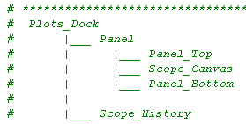
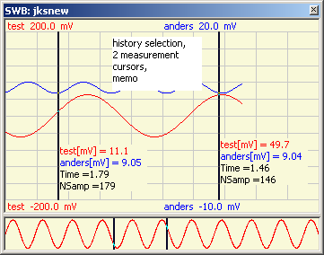

Scope Internals  ( april 2009 )
( april 2009 )
These are the preferred Plot elements, both for static and dynamic display of xt-data. It has the following features:
t_Scope_Display ( Brick with extended Scope )
|
t_C_Scope_Display ( Control with extended Scope )
|
tBase_Scope_with_History
|
_PlotCanvas
_PlotCanvas_History
t_Scope_Plot ( Brick with simple Scope )
|
t_C_Scope_Plot ( Control with simple Scope )
|
tBase_Scope_with_History
|
_PlotCanvas
_PlotCanvas_History
tScope_Display_Light ( TopWindow with simple Scope. e.g. for Signal WorkBench )
|
tBase_Scope_with_History
|
_PlotCanvas
_PlotCanvas_History
tScope_Display_Light
This class is specially developed for the Signal WorkBench (SWB) and consist of a Normal Scope and a History Scope. This class is based on tBase_Scope and has only 1 method, used by the main program to transport data (and parameters). Data can be any combination of tuples, list, 1-dim arrays, 2-dim arrays, which might even be of different length.
Calculate ( Display_Data, Display_Params = None )
This class has 3 callback functions,
one to redraw the history signal when another signal is selected by the user :
def _On_History_Signal_Selection ( self, Signal ) :
and one to redraw the normal signal, when another selection in the history scope is made
def _On_History_Cursor_Selection ( self, x0, x1 ) :
and one to get autoscale parameters
def _Get_MinMax ( self, chan ) :
tBase_Scope
|
 |
 |
- __init__
- On_Cursor_Selection (CallBack from history display)
PlotCanvas
_ __init__
- Add_Data
--------------------------------
- Get_DataSet
- Get_NCurve
- Add_Channel
- Set_Canvas
- Set_Channel
- Draw don't know why this is necessary
PlotCanvas2
_ __init__
- Add_Data
-------------------------
- Set_Channel
- Set_Canvas